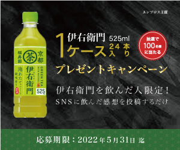

プレゼントキャンペーンのバナー
制作時期：2022年5月
制作時間：5時間
使用ツール：Illustrator・Photoshop
職業訓練校での授業の一環で、「ペットボトル緑茶メーカーの"伊右衛門"プレゼントキャンペーン」のSNS
投稿用バナーをテーマに制作しました。
黒い背景はインパクトがありSNSで目立つことや、文字や商品画像が浮かび上がってきて大事な部分が強調
されやすいという理由で選定しました。
ブラックフライデーをイメージし、"突如として発生したお得感"を演出することで、集客に繋がればという
願いも込めています。
文字色には、緑や赤、白など実際に商品に使われている色を使用し、全体的に統一感を持たせました。